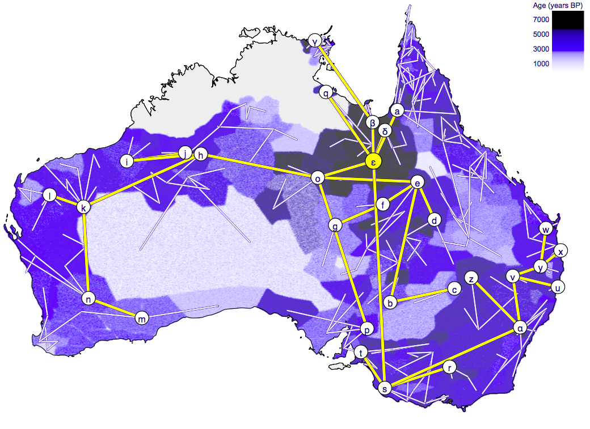

BEAST 2
- BEAST: MCMC engine for Bayesian hierarchical clustering
- BEAUti: GUI for BEAST + lots of tools
- Package based/extendible
- http://beast2.org
Hierarchical clustering
Mitchell et al, Science, 2014
Phylo-Geography of Zika
Faria et al, Nature June 2017
Origin of Pama Nyungan
 Bouckaert et al, under review
Ebola
 Stadler et al, PlosCurr, 2014
Stadler et al, PlosCurr, 2014
Co-evolving characters
Intensive agriculture x Hierarchical societyBouckaert et al, under review
Not quite tree like models

Other interests
- Computational
- Modelling
- Linguistic models
- Bayesian networks/graphical models
- Evaluating learning algorithms
- Model adequacy